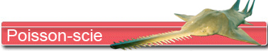
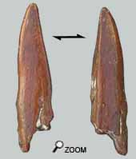
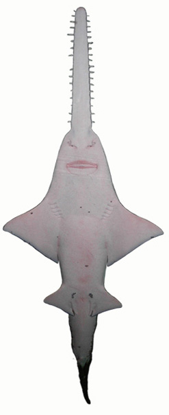

Les dents du râteau

 En général, les seuls restes de poisson scie retrouvés sont des dents rotrales et des vertèbres.
Pour ce qui est des vertèbres, il est difficile de les rapporter indiscutablement à Pritis
Par contre, les dents rostrales sont assez caractéristiques. Cependant la forme dépend de l’implantation sur le rostre. Mais la plupart de ces dents ont une section en forme de couteau, avec une arête tranchante et une autre arête aplatie. Elles sont au nombre de 14 à 34 selon les espèces.
Ces dents ne portent pas d’émail.
Un poisson bizarre !

Tout le monde connaît l’aspect de ce poisson avec son rostre dentelé à la manière d’une scie.
Il existe sept espèces actuelles fréquentant des eaux tropicales.
Il est d’une nature indolente et passe beaucoup de temps inactif.
On attribue à son rostre le rôle de harpon ou d’outil. En contact avec un banc de poissons, Pritis remuerait vivement la tête de manière à blesser des poissons en groupe afin de les gober par la suite.
De manière générale, il utilise son rostre pour herser les fonds boueux ou sableux et débusquer ses proies cachées. Il se nourrit essentiellement de petits crustacés et de mollusques.
De fait, on le rencontre dans les eaux peu profondes au bord des rivages. On a aussi fait mention de sa présence dans des zones estuaires, voir même carrément dans le lit de certains grands fleuves tropicaux ou de lacs. Sa présence dans les faluns n’a donc rien d’illogique.
Les espèces actuelles peuvent mesurer jusqu’à 7 m, mais la majorité des poissons-scies ne dépasse pas quelques mètres. m, mais la majorité des poissons-scies ne dépasse pas quelques mètres.
Les dents buccales de pristis sont rares parce que trop petites. Elles ressemblent à celles de Rhinobatus mais sont en forme de dôme sans carène. Celle présentée ne montre pas d'usure fontionnelle sur la face occlusale.
|